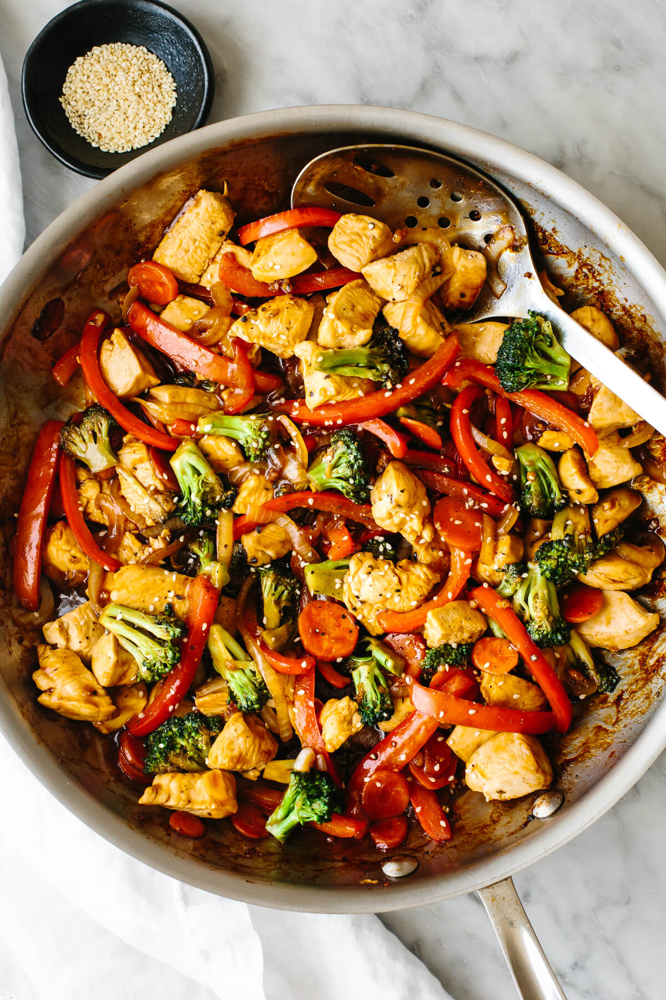

Chicken Stir Fry

Chicken stir-fry is a speedy dinner that’s jam-packed with flavor!
Just grab a large pan and watch how juicy chicken, loads of veggies,
and a savory-sweet sauce quickly come together in this colorful, healthy meal.
Ingredients
Steps
- Make the stir-fry sauce.
Whisk together the chicken broth, soy sauce,
sesame oil, dry sherry, honey, rice vinegar,
and arrowroot powder in a small bowl.
- Saute the chicken.
In a large skillet or wok on medium high heat,
cook the chicken with salt, pepper,
and a little avocado oil for about 4-5 minutes until lightly browned.
Then remove to a plate.
- Cook the vegetables.
Add a splash more oil, then saute the bell pepper,
onion, carrot, and broccoli until tender.
- Stir-fry everything together!
Add the chicken back in with the garlic,
ginger, and stir-fry sauce.
Toss it all together until everything is well coated in the sauce – that’s it!
Some tips when cooking!
- Avoid undercooked ingredients by stir-frying the chicken and vegetables separately.
Trust me, it makes all the difference.
- Avoid overcooking the vegetables by sauteing them until they’re slightly tender,
yet still crisp in the third step.
That way they won’t become too soft as you continue cooking them with the sauce.
- Avoid overcooking the vegetables by sauteing them until they’re slightly tender,
yet still crisp in the third step.
That way they won’t become too soft as you continue cooking them with the sauce.